정보처리산업기사 (2007-03-04 기출문제)
1과목: 데이터 베이스
1. 데이터베이스 설계 단계 중 논리적 설계 단계에서의 수행사항이 아닌 것은?
- 논리적 데이터 모델로 변환
- 트랙잭션 인터페이스 설계
- 저장 레코드 양식 설계
- 스키마의 평가 및 정제
(정답률: 62%)

2. SQL의 조작문 유형으로 옳지 않은 것은?
- INSERT ∼ TO ∼ VALUE
- SELECT ∼ FROM ∼ WHERE
- DELETE ∼ FROM ∼ WHERE
- UPDATE ∼ SET ∼ WHERE
(정답률: 83%)
3. 순서가 A, C, B, D로 정해진 입력 자료를 스택에 입력하였다가 출력한 결과가 될 수 없는 것은? (단, 보기 항에서 좌측 값부터 먼저 출력된 순서이다.)
- B, A, D, C
- C, B, A, D
- B, C, D, A
- C, D, B, A
(정답률: 61%)
4. 데이터 구조와 제약조건에 대한 명세를 스키마(Schema)라고 한다. 3단계 스키마 중 데이터의 접근권한, 보안 정책, 무결성 규칙에 관한 명세를 정의한 것은?
- 제어 스키마
- 외부 스키마
- 개념 스키마
- 내부 스키마
(정답률: 73%)
5. SQL의 데이터 정의문(DDL)에 속하지 않는 것은?
- CREATE
- DROP
- ALTER
- INSERT
(정답률: 76%)
6. 데이터베이스 설계 순서를 바르게 나열한 것은?
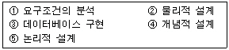
- ①→②→③→④→⑤
- ①→③→②→④→⑤
- ①→④→⑤→②→③
- ①→②→④→③→⑤
(정답률: 90%)
7. SQL에서 뷰(View) 생성시 사용하는 예약어는?
- CREATE
- ALTER
- UPDATE
- DROP
(정답률: 85%)
8. 다음 문장의 ( )에 적당한 것은?
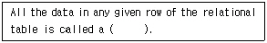
- block
- tuple
- field
- file
(정답률: 76%)
9. 다음 중 진법에 의한 변환 값이 다른 하나는?
- (F4)16
- (11110100)2
- (244)10
- (360)8
(정답률: 67%)
10. 다음 릴레이션의 차수(Degree)는?
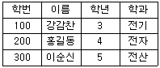
- 2
- 3
- 4
- 9
(정답률: 83%)
11. 다음 관계 대수의 의미로 가장 타당한 것은?
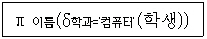
- 이름, 학과, 컴퓨터를 속성으로 하는 학생 테이블을 생성하라.
- 컴퓨터 학과 학생의 이름을 삭제하라.
- 컴퓨터 학과 학생의 이름을 검색하라.
- 학과의 이름을 컴퓨터로 변경하라.
(정답률: 83%)
12. 개체-관계(E-R) 모델에서 관계 타입을 표시하는 기호는?
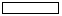
(정답률: 81%)
13. 다음 Infix 표기법을 Postfix 표기법으로 옳게 변환한 것은?
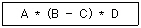
- ABC-*D*
- **A-BCD
- AB*C*-D
- A*B-C*D
(정답률: 72%)
14. What is the properties of relations incorrectly?
- There are duplicate tuples.
- Tuples are unordered.
- Attributes are unordered.
- All attribute values are atomic.
(정답률: 59%)
15. 뷰(View)에 대한 설명으로 옳지 않은 것은?
- 하나 이상의 기본 테이블로부터 유도되어 만들어지는 가상 테이블이다.
- 뷰가 정의된 기본 테이블이 삭제되면, 뷰도 자동적으로 삭제된다.
- DBA는 보안 측면에서 뷰를 활용할 수 있다.
- 뷰 위에 또 다른 뷰를 정의할 수 없다.
(정답률: 75%)
16. 데이터베이스의 정의와 거리가 먼 것은?
- 운영 데이터
- 개별 데이터
- 통합된 데이터
- 저장된 데이터
(정답률: 83%)
17. 선형 자료 구조에 해당하지 않는 것은?
- 스택(Stack)
- 큐(Queue)
- 트리(Tree)
- 데크(Deque)
(정답률: 82%)
18. 리스트에서 FIFO(first In First Out)의 특성을 지닌 추상적 자료형으로서, 시작과 끝을 표시하는 두 개의 포인터를 갖는 자료구조는?
- 스택(Stack)
- 큐(Queue)
- 그래프(Graph)
- 트리(Tree)
(정답률: 70%)
19. 삽입(Insertion) 정렬을 사용하여 다음의 자료를 오름차순으로 정렬하고자 한다. 3회전 후의 결과는?
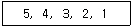
- 3, 4, 5, 2, 1
- 4, 5, 3, 2, 1
- 2, 3, 4, 5, 1
- 1, 2, 3, 4, 5
(정답률: 64%)
20. 정규화를 거치지 않으면 릴레이션 조작시 데이터 중복에 따른 예기치 못한 곤란한 현상이 발생할 수 있다. 이러한 이상(Anomaly) 현상의 종류에 해당하지 않는 것은?
- 삭제 이상
- 삽입 이상
- 갱신 이상
- 조회 이상
(정답률: 73%)
2과목: 전자 계산기 구조
21. CPU가 직접 제어하는 방식 중에서 입·출력 장치의 요구가 있을 때 데이터를 전송하는 제어 방식은?
- 프로그램 입·출력 제어 방식
- 인터럽트 입·출력 제어 방식
- 채널에 의한 입·출력 제어 방식
- DMA에 의한 입·출력 제어 방식
(정답률: 52%)
22. 다음 중 불 대수 정리로 옳지 않은 것은?
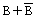
=1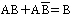
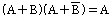
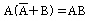
(정답률: 67%)
23. 누산기(Accumulator)의 주된 기능은?
- 일시적으로 데이터를 저장한다.
- 실행될 다음 명령의 통로를 유지한다.
- 인터럽트가 가능하도록 선택한다.
- 실행할 명령을 해석한다.
(정답률: 80%)
24. 정보의 전송 중에 생기는 오류를 검출(체크)하기 위하여 첨가하는 것은?
- ASCII
- 패리티 비트
- Track 정보
- 8421 코드
(정답률: 89%)
25. 어떤 Micro-Computer의 기억 용량이 64Kbyte이다. 이 Micro- Computer의 Memory 수와 필요한 Address Line의 수는?(단, Memory 1개의 용량은 1 byte이다.)
- 2의16승개, 16line
- 2의64승개, 64line
- 2의64승개, 16line
- 2의16승개, 64line
(정답률: 48%)
26. ROM에 대한 설명 중 옳지 않은 것은?
- 기억된 내용을 임의로 변경시킬 수 없다.
- 사용자가 작성한 Program이나 Data를 기억시켜 처리하기 위해 사용하는 Memory이다.
- Read만이 가능하다.
- Micro Instruction을 내장하고 있다.
(정답률: 61%)
27. Computer System에 예기치 않은 일이 발생했을 때 제어 프로그램에 알려주는 것을 무엇이라고 하는가?
- Interrupt
- Program Library
- Program Status Word
- Problem State
(정답률: 84%)
28. 자료에 관한 설명 중 옳은 것은?
- EBCDIC코드는 데이터 통신용으로 널리 쓰이며, 특히 소형 컴퓨터용으로 쓰인다.
- ASCII코드는 IBM사에서 개발한 것으로 대형 컴퓨터용에 쓰인다.
- 자료의 가장 작은 단위를 Bit라 하며, Bit는 Binary Digit의 약자이다.
- 부동소수점 방식의 특징은 적은 Bit를 차지함과 동시에 정밀도가 낮다는 것이다.
(정답률: 76%)
29. 가상기억장치에서 주기억장치로 프로그램을 옮기기 위해서 번지를 조정하는 것을 무엇이라고 하는가?
- Blocking
- Buffering
- Polling
- Mapping
(정답률: 67%)
30. 다음 중 명령어 주기에 속하지 않는 것은?
- Fetch Cycle
- Direct Cycle
- Indirect Cycle
- Execution Cycle
(정답률: 56%)
31. -121을 표시하는 부호화된 2’s complement number는 어느 것인가?
- 00000111
- 10000111
- 01111000
- 11111000
(정답률: 57%)
32. 프로그램 카운터(PC)의 값과 명령어의 주소 부분이 더해져서 유효 주소를 결정하는 주소지정방식에서 필요한 주소는?
- 완전 주소
- 약식 주소
- 절대 주소
- 상대 주소
(정답률: 74%)
33. 10진수 9를 Excess-3 code로 변환하면?
- 1001(E)
- 1110(E)
- 1101(E)
- 1100(E)
(정답률: 61%)
34. 다음 code 중 아날로그-디지털 변환기나 입·출력 장치를 제어하는 코드로 주로 사용되는 것은?
- EXCESS-3 코드
- 8421(BCD) 코드
- 순수한 Binary 코드
- 그레이(Gray) 코드
(정답률: 65%)
35. 인터럽트의 발생 원인이나 종류를 소프트웨어로 판단하는 방법은?
- Polling
- Daisy chain
- Decoder
- Multiplexer
(정답률: 74%)
36. 순차적 접근 기억장치(Sequential Access Memory)로만 사용되는 것은?
- 자기드럼 기억장치
- 자기디스크 기억장치
- 자기테이프 기억장치
- DASD 장치
(정답률: 78%)
37. Shift Register에 있는 Binary Number가 여섯(6)번 Shift-Left 되었을 때의 값은?(단, Shift Register는 충분히 크다고 가정한다.)
- Number x 6
- Number ÷ 6
- Number x 64
- Number ÷ 64
(정답률: 62%)
38. 다음 중 조합논리 회로가 아닌 것은?
- 반가산기(Half Adder)
- 디코더(Decoder)
- 멀티플렉서(Multiplexer)
- 플립플롭(Flip Flop)
(정답률: 63%)
39. OP 코드 필드(Operation Code Field)가 4비트인 인스트럭션은 몇 가지 종류의 인스트럭션을 생성할 수 있는가?
- 24
- 24-1
- 23
- 23-1
(정답률: 57%)
40. 트랩(Trap)의 발생 원인으로 가장 올바른 것은?
- 0 으로 나눌 때
- 정해진 시간이 지났을 때
- 정보 전송이 끝났음을 알릴 때
- 입/출력장치가 데이터의 전송을 요구할 때
(정답률: 61%)
3과목: 시스템분석설계
41. 시스템의 특성 중 시스템이 정의된 기능을 오류가 없이 정확히 발휘하기 위해 정해진 규정이나 한계, 또는 궤도로부터 이탈되는 사태나 현상을 미리 인식하여 그것을 올바르게 수정해 가는 것을 의미하는 것은?
- 목적성
- 자동성
- 제어성
- 종합성
(정답률: 77%)
42. 가장 강한 결합도를 가지고 있으며, 한 모듈이 다른 모듈의 내부 기능 및 그 내부 자료를 조회하도록 설계 되었을 경우와 관계 되는 결합도는?
- 내용 결합도
- 외부 결합도
- 스템프 결합도
- 자료 결합도
(정답률: 56%)
43. 코드의 기능 중 다음 설명과 관계되는 것은?
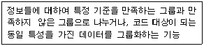
- 표준화 기능
- 분류 기능
- 식별 기능
- 연산 기능
(정답률: 79%)
44. 체크 시스템의 종류 중 입력된 수치가 미리 정해진 범위 내의 수치인지를 검사하는 방법은?
- Format Check
- Numeric Check
- Logical Check
- Limit Check
(정답률: 75%)
45. 다음 중 시스템 분석가가 갖추어야 할 능력과 요건으로 가장 거리가 먼 것은?
- 기계 중심적인 분석 능력
- 거시적 관점에서 세부적 요소들을 관찰할 수 있는 능력
- 사용자와 개발 요구자의 환경 이해 능력
- 서술 형식으로 혹은 구술 형식으로 의사 소통할 수 있는 능력
(정답률: 73%)
46. LOC 기법에 의해 예측된 모듈의 라인수가 80000 라인이고 개발에 투입되는 프로그래머의 수가 4명, 프로그래머의 월 평균 생산량이 1000 라인이라고 할 때, 이 소프트웨어를 완성하기 위해 개발에 필요한 기간은 얼마인가?
- 10개월
- 15개월
- 20개월
- 25개월
(정답률: 81%)
47. 파일 설계 순서가 옳게 나열된 것은?
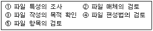
- ④→⑤→②→③→①
- ②→⑤→①→④→③
- ③→⑤→①→②→④
- ①→⑤→②→④→③
(정답률: 71%)
48. 객체 지향의 개념에서 하나 이상의 유사한 객체들을 묶어서 하나의 공통된 특성을 표현한 것을 무엇이라고 하는가?
- 인스턴스
- 메소드
- 메시지
- 클래스
(정답률: 82%)
49. 시스템의 기본 요소 중 출력 결과가 만족스럽지 않거나 보다 좋은 출력을 위해 다시 입력하는 과정은 무엇인가?
- 출력
- 처리
- 피드백
- 제어
(정답률: 87%)
50. 시스템 문서화의 효과로 거리가 가장 먼 것은?
- 시스템 개발 후 시스템의 유지 보수가 용이하다.
- 시스템 개발팀에서 운용팀으로 인계 인수가 쉽다.
- 시스템 개발 중 추가 변경에 따른 혼란을 방지한다.
- 시스템 에러 발생시 책임 소재를 분명히 한다.
(정답률: 79%)
51. 프로그램 설계서 작성으로 인한 기대효과와 거리가 먼 것은?
- 프로그래머의 인사 이동시 결함을 방지할 수 있다.
- 시스템의 수정, 변경, 유지보수가 간단하게 이루어진다.
- 비용이 절감되며, 장기계획을 수립할 수 있다.
- 컴퓨터의 기종 변경시 프로그램의 생산성이 떨어진다.
(정답률: 77%)
52. Rumbaugh의 모델링 방법 중 시간 흐름에 따른 객체들과 객체들 사이의 제어 흐름, 상호 작용, 동작 순서 등을 표현하는 것으로 시스템의 변화를 보여주는 객체 상태 다이어그램을 작성하는 모형에 해당하는 것은?
- 객체 모형
- 기능 모형
- 동적 모형
- 정적 모형
(정답률: 59%)
53. IPT의 목적으로 옳지 않은 것은?
- 생산성 향상
- 표준화의 일환
- 개인적 차이의 극대화
- 출력 지향보다 품질을 중시
(정답률: 74%)
54. 자료 입력 방식 중 발생한 데이터를 전표 상에 기록하고 일정한 시간 단위로 일괄 수집하여 입력 매체에 수록하는 입력 방식은?
- 회귀 데이터 시스템
- 집중 매체화 시스템
- 분산 매체화 시스템
- 직접 입력 시스템
(정답률: 69%)
55. 코드 기입 과정에서 원래는 “2006”으로 표기해야 하는데 오기를 하여 “2060”으로 표기하였다면, 어느 Error 에 해당되는가?
- Transcription Error
- Transposition Error
- Addition Error
- Random Error
(정답률: 81%)
56. HIPO 의 설명으로 옳지 않은 것은?
- 문서화의 도구 및 설계 도구 방법을 제공하는 기법이다.
- 입력, 처리, 출력 관계를 시각적으로 기술한다.
- 시스템의 구조를 기능 중심으로 설계한다.
- 상향식 설계 방식이다.
(정답률: 81%)
57. 다음과 같이 코드를 부여할 대상의 이름이나 약호를 코드의 일부분으로 사용하는 코드화 방법은?
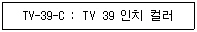
- 순서 코드(Sequence Code)
- 그룹 분류 코드(Group Classification Code)
- 블록 코드(Block Code)
- 연상 기호 코드(Mnemonic Code)
(정답률: 75%)
58. 다음의 입력 설계 단계 중 가장 먼저 행해지는 것은?
- 입력정보 발생의 설계
- 입력정보 매체의 설계
- 입력정보 투입의 설계
- 입력정보 수집의 설계
(정답률: 80%)
59. 파일의 종류 중 마스터 파일의 내용을 변경하거나 참조할 때 사용하며 일시적인 성격을 지닌 정보를 기록하는 파일은?
- Transaction File
- Summary File
- Source Data File
- Report File
(정답률: 79%)
60. 파일을 읽어 들여서 데이터를 변형하여 입력파일과 다른 형식의 새로운 파일을 작성하는 작업은?
- Extract
- Convert
- Merge
- Generate
(정답률: 46%)
4과목: 운영체제
61. 다음과 같이 주기억장치의 공백이 있다고 할 때, 최적 적합(best fit) 배치 방법은 13K 크기의 프로그램을 어느 영역에 할당하는가?
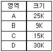
- A
- B
- C
- D
(정답률: 83%)
62. 유닉스에서 자식 프로세스를 생성할 때 사용하는 명령은?
- pipe
- fork
- mknod
- open
(정답률: 66%)
63. 다음은 무엇에 관한 정의인가?
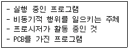
- 파일 시스템
- 프로세스
- 세마포어
- 모니터
(정답률: 80%)
64. PCB에 저장되는 정보가 아닌 것은?
- 프로세스의 우선순위
- 할당되지 않은 주변 기기들의 상태 정보
- 프로세스가 위치한 메모리에 대한 포인터
- 프로세스의 현재 상태
(정답률: 82%)
65. 교착상태 발생의 필요충분조건이 아닌 것은?
- 상호 배제
- 점유 및 대기
- 선점
- 환형 대기
(정답률: 61%)
66. 분산 처리 운영시스템의 설명으로 옳지 않은 것은?
- 시스템의 점진적 확장이 용이하다.
- 신뢰성, 가용성이 증대된다.
- 자원의 공유와 부하 균형이 가능하다.
- 중앙 집중형 시스템에 비해 보안 정책이 간소해진다.
(정답률: 71%)
67. 수행 중인 프로그램에서 0으로 나누는 연산이나, 허용되지 않는 명령어의 수행, 스택의 오버플로우(overflow)등과 같은 잘못이 있을 때 발생하는 인터럽트는 무엇인가?
- 기계 검사(Machine Check) 인터럽트
- SVC(SuperVisor Call) 인터럽트
- 프로그램 검사(Program Check) 인터럽트
- 재시작(Restart) 인터럽트
(정답률: 66%)
68. 분산처리 운영체제 시스템의 구조 중 성형구조에 대한 설명으로 옳지 않은 것은?
- 자체가 단순하고 제어가 집중되어 모든 작동이 중앙 컴퓨터에 의해 감시되므로 하나의 제어기로 조절이 가능하다.
- 집중제어로 보수와 관리가 용이하다.
- 중앙 컴퓨터 고장시 전체 네트워크에는 영향을 주지 않는다.
- 중앙 노드를 제외한 노드의 고장은 다른 노드에 영향을 주지 않는다.
(정답률: 70%)
69. 다음 접근제어 리스트에서 “파일1”이 처리될 수 없는 것은?(단, 여기서 R=읽기, W=쓰기, P=인쇄, L=공유)
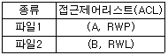
- 읽기
- 쓰기
- 인쇄
- 공유
(정답률: 85%)
70. 다음 설명은 무엇에 관한 것인가?
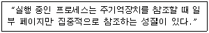
- Locality
- Thrashing
- Fragmentation
- Compaction
(정답률: 66%)
71. 페이지 기법에 관한 설명으로 옳지 않은 것은?
- 페이지 크기가 작을수록 더 많은 페이지가 존재한다.
- 페이지가 클수록 더 큰 페이지 테이블 공간이 필요하다.
- 페이지 크기가 작을 경우 우수한 working set을 가질 수 있다.
- 페이지 크기가 클수록 참조되는 정보와는 무관한 많은 양의 정보가 주기억 장치에 남게 된다.
(정답률: 44%)
72. 페이지 교체 알고리즘 중 2개의 비트, 즉 참조 비트와 변형 비트가 사용되는 것은?
- FIFO
- LFU
- NUR
- LRU
(정답률: 71%)
73. 대기리스트에 다음과 같은 작업들이 있다. FCFS방식으로 스케줄링할 때 가장 먼저 실행되는 작업은
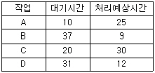
- A
- B
- C
- D
(정답률: 46%)
74. FIFO 교체 알고리즘을 사용하고 페이지 참조의 순서가 다음과 같다고 가정한다면, 할당된 프레임의 수가 3일 때 몇 번의 페이지 부재가 발생하는가?(단, 할당된 프레임은 초기에 모두 비어 있다고 가정함)
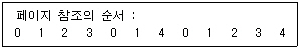
- 7
- 8
- 9
- 10
(정답률: 50%)
75. 파일 디스크립터에 대한 설명으로 옳지 않은 것은?
- 파일 제어 블록(FCB)이라고도 한다.
- 시스템에 따라 다른 구조를 가질 수 있다.
- 파일 관리를 위해 시스템이 필요로 하는 정보를 가지고 있다.
- 파일 시스템이 관리하므로 사용자가 직접 참조할 수 있다.
(정답률: 67%)
76. 유닉스에서 커널(Kernel)에 대한 설명으로 옳지 않은 것은?
- 주기억장치에 적재된 후 상주하면서 실행된다.
- UNIX의 핵심적인 부분이다.
- 프로세스 관리, 기억장치 관리, 파일 관리, 입·출력 관리 등의 기능을 수행한다.
- 사용자의 명령어를 인식하여 프로그램을 호출하고 명령을 수행하는 명령어 해석기이다.
(정답률: 73%)
77. 운영체제의 설계 목적으로 가장 타당한 것은?
- 처리량의 향상과 응답시간의 단축
- 처리량의 감소와 응답시간의 증가
- 처리량의 감소와 응답시간의 단축
- 처리량의 향상과 응답시간의 증가
(정답률: 82%)
78. 운영체제의 역할로 거리가 먼 것은?
- 목적 프로그램과 로드 모듈의 연결
- 사용자와의 인터페이스 구현
- 프로세서, 메모리 등의 자원 스케줄링
- 입·출력을 위한 편의 제공
(정답률: 65%)
79. 디스크 대기 큐에 다음과 같은 순서(왼쪽부터 먼저 도착한 순서임)로 트랙의 액세스 요청이 대기 중이다. 모든 트랙을 서비스하기 위하여 FCFS 스케줄링 기법이 사용되었을 때, 모두 몇 트랙의 헤드 이동이 생기는가?(단, 현재 헤드의 위치는 50 트랙이다)
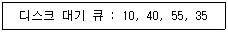
- 50
- 85
- 1⑤
- 110
(정답률: 51%)
80. RR(Round Robin)방식에 관한 설명으로 옳지 않은 것은?
- 시분할 시스템을 위해 고안된 방식이다.
- 프로세스에게 이미 할당된 프로세서를 강제로 빼앗을 수 없고 그 프로세스의 사용이 종료된 후에 스케줄링 해야 하는 방법을 택하고 있다.
- 시간 할당량이 클 경우 FCFS 기법과 같아지고, 시간 할당량이작을 경우 문맥 교환 및 오버헤드가 자주 발생될 수 있다.
- 시스템이 사용자에게 적합한 응답시간을 제공해 주는 대화식 시스템에 유용하다.
(정답률: 58%)
5과목: 정보통신개론
81. 8 위상변조와 2진폭변조를 혼합하여 변조속도가 1200[band] 인 경우, 이는 몇 [bps]에 해당 되는가?
- 1200
- 2400
- 3600
- 4800
(정답률: 53%)
82. 다음 중 회선의 상태에 따라 동적으로 프레임의 길이를 변경시켜 전송하는 것은?
- Selective Repeat ARQ
- Adaptive ARQ
- Go-back-N ARQ
- Stop and Wait ARQ
(정답률: 60%)
83. 다음 중 HDLC 프레임의 구조가 순서대로 옳은 것은?
- 플래그-주소부-제어부-정보부-FCS-플래그
- 플래그-제어부-FCS-정보부-주소부-플래그
- 플래그-주소부-정보부-FCS-제어부-플래그
- 플래그-제어부-FCS-주소부-정보부-플래그
(정답률: 67%)
84. 정보통신시스템에서 통신제어장치의 기능이 아닌 것은?
- 데이터 송·수신 제어
- 전송 오류의 검출
- 디지털신호를 아날로그신호로 변환
- 회선의 감시 및 접속제어
(정답률: 65%)
85. 다음 중 패킷교환망에 흐르는 패킷수를 적절히 조절하여 전체시스템의 안전성을 기하고 서비스의 품질저하를 방지하는 기능은?
- Look Up
- Polling
- Flow C
- Closed Connection
(정답률: 49%)
86. LAN에서 사용되는 매체 액세스 제어(Access Control)기법과 관련 없는 것은?
- TOKEN-BUS
- CDMA
- CSMA/CD
- TOKEN-RING
(정답률: 70%)
87. 패킷교환망의 특징으로 가장 옳지 않은 것은?
- 장애 발생시 대체 경로 선택 불가능
- 프로토콜 및 속도 변환 가능
- 대량의 데이터 전송시 전송 지연이 발생될 수 있음
- 표준화된 프로토콜 적용
(정답률: 67%)
88. 다음 중 동선 케이블에 비해 광섬유 케이블의 장점이 아닌 것은?
- 누화가 없다.
- 광대역성이다.
- 보안성이 우수하다.
- 전기적 유도가 발생된다.
(정답률: 75%)
89. ATM 셀의 헤더 길이는 몇 byte 인가?
- 2
- 5
- 8
- 10
(정답률: 65%)
90. OSI 7계층 중에서 정보의 형식 설정과 코드의 변환, 암호화, 압축 등의 기능을 수행하는 계층은?
- 네트워크 계층
- 트랜스포트 계층
- 데이터링크 계층
- 프리젠테이션 계층
(정답률: 67%)
91. 비동기식(Asynchronous) 데이터 전송방식에 관한 설명으로 틀린 것은?
- 동기식보다 주로 저속도의 전송에 이용된다.
- 문자의 앞쪽에 Start bit가 위치한다.
- 문자의 뒤쪽에 Stop bit를 갖는다.
- 데이터 묶음의 앞에 동기문자가 있다.
(정답률: 68%)
92. 피변조파로부터 원래의 신호파를 만드는 것을 무엇이라 하는가?
- 변조
- 복조
- 증폭
- 발전
(정답률: 78%)
93. 다음은 잡음이 있는 통신채널의 경우 통신용량을 표시하는 식이다. 여기서 기호가 바르게 표현된 것은?
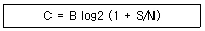
- C : 신호전력
- B : 대역폭
- S : 잡음전력
- N : 통신용량
(정답률: 66%)
94. 다음 중 LAN의 활용 목적과 관계가 가장 적은 것은?
- 공장자동화에 있어 근거리내 CAD/CAM 등 각종 정보의 공유
- 본사의 주컴퓨터와 원격지점간에 정보의 교류
- 사무실내의 전자우편, 문서처리 및 분배
- 단일 건물의 연구소내 고속프린터의 공유
(정답률: 70%)
95. 다음 중 2개 이상의 신호를 결합하여 하나의 회선을 통해서 전송 할 수 있는 기법은?
- CRC(Cyclic Redundancy Code)
- Multiplexing
- FEC(Forward Error Correction)
- LRC(Longitudinal Redundancy Code)
(정답률: 71%)
96. 다음 중 가상회선(Virtual Circuit)의 서비스 유형은?
- 비접속형 통신서비스
- 메시지교환 통신서비스
- 연결지향형 통신서비스
- 회선교환 통신서비스
(정답률: 25%)
97. DTE 와 DCE를 접속할 때 고려하여야 할 특성으로 적합하지 않은 것은?
- 전기적 특성
- 기계적 특성
- 기능적 특성
- 통신적 특성
(정답률: 43%)
98. 다음 중 서로 다른 프로토콜을 사용하는 망을 연결하는데 사용되는 것은?
- 리피터(Repeater)
- 게이트웨이(Gateway)
- 서버(Server)
- 클라이언트(Client)
(정답률: 71%)
99. 통신 프로토콜(protocol)의 기본 요소에 해당하지 않는 것은?
- 포맷(Format)
- 구문(Syntax)
- 의미(Semantics)
- 타이밍(Timing)
(정답률: 73%)
100. 다음 중 에러검출과 정정이 가능한 것은?
- 수평패리티검사
- 수직패리티검사
- 정마크부호
- 해밍(Hamming)부호
(정답률: 84%)